I'm a front-end developer based in Amsterdam, NL. I write code for Adyen, and when I'm not I like to patch people up as a volunteer for the Red Cross or kick ass at Krav Maga Noord-Holland.
 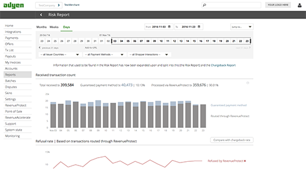
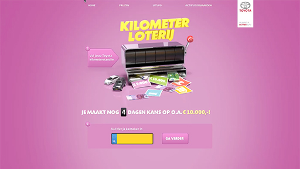
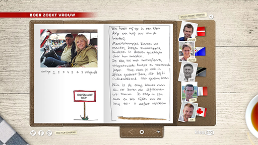
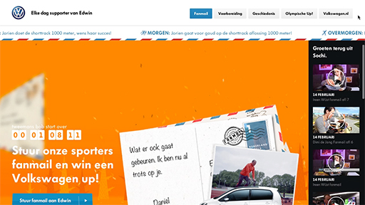
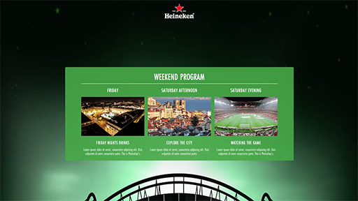
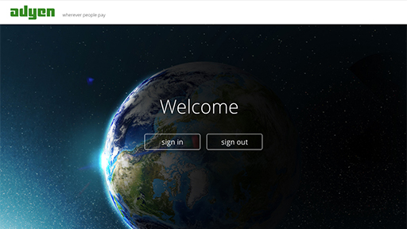
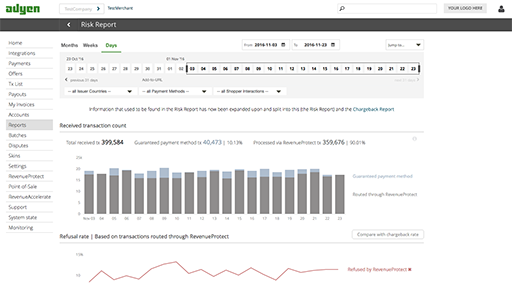
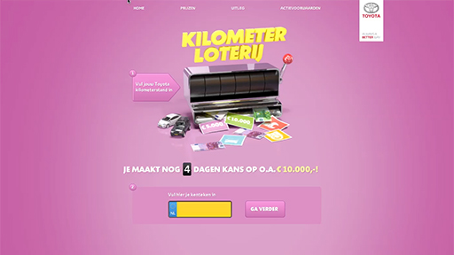
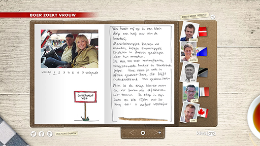
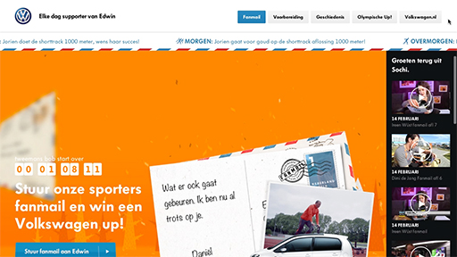
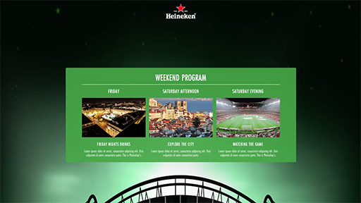
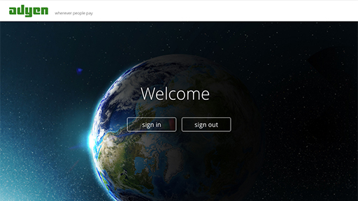